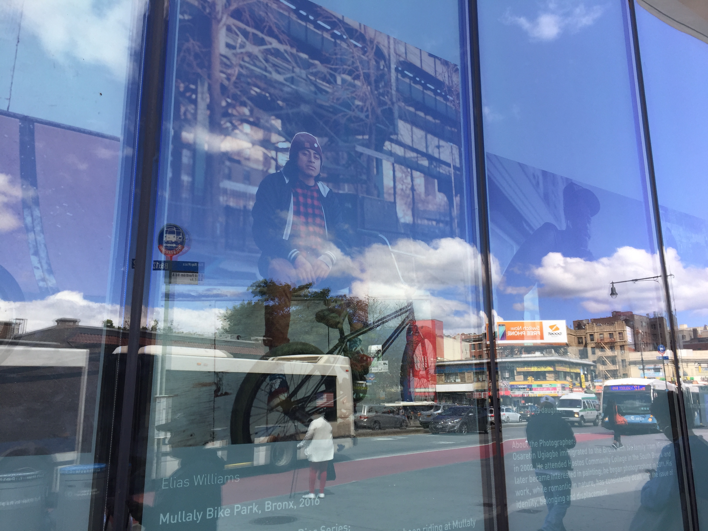
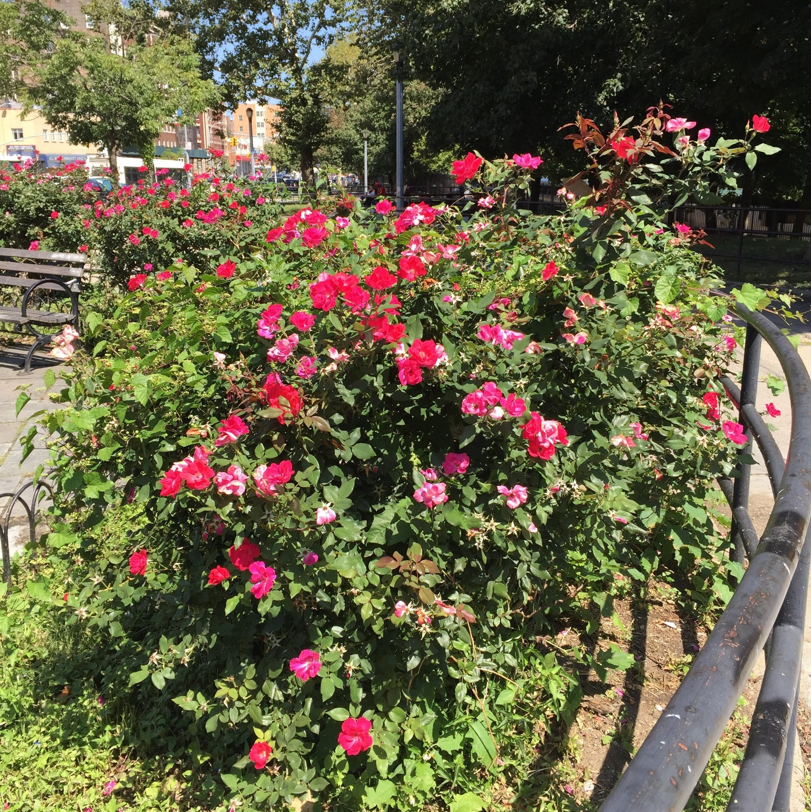

About N.Y.C. Revamped
 Just like constructing a new building, it starts with a thought or an idea. That idea grows into a fully functional website. A website that visitors can go to for information not found in brochures. This is what N.Y.C. Revamped achieves. This Website grabs the viewer's attention with it's diverse sense of style, just like the great city it represents.
Built for our Friends near and far.
N.Y.C. Revamped's goal was to create a Fun and Informative Website for all Visitors. By including some personal stories, experiences, and a touch of history, will help all visitors to see just how wonderful and meaningful this city is to all New Yorkers.
Visitors will gain a positive view as well as some helpful information about this city from ordinary everyday people.(photo by Kappboom)

"New York City"
have many Attractions. Can you name a few?
- Statue of Liberty
- Times Square
- Empire State Building
- Madison Square Garden
- Brooklyn Bridge
- Bronx or Brooklyn Botanic Gardens
- The Bronx Zoo
- Intrepid Sea, Air & Space Museum
There's beauty in the city that never sleeps.
See what we see in NYC. One of the best things about New York City is you don't need a car! You can find transportation to just about every single iconic place.
My New York
Have you made your list of things to do?. We hope you was able to get some great ideas from N.Y.C Revamped. So start making your To-Do-List. There is something for everyone. New York City is truly the city that never sleeps, because almost any time of the day or night you can find a place that is open and some sort of transportation to get you there and back. Do your research before going anywhere. Look up times, prices, and transportation. Preparation and Safety always comes first.